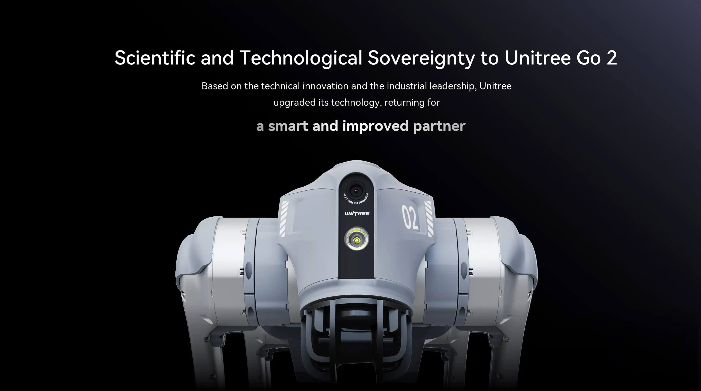
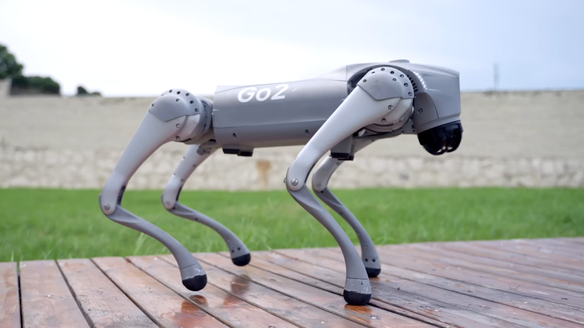
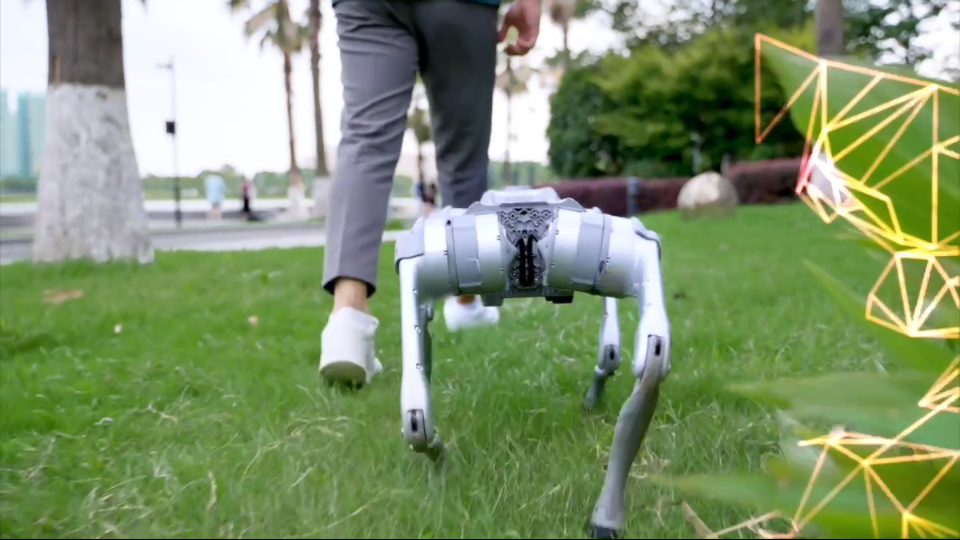
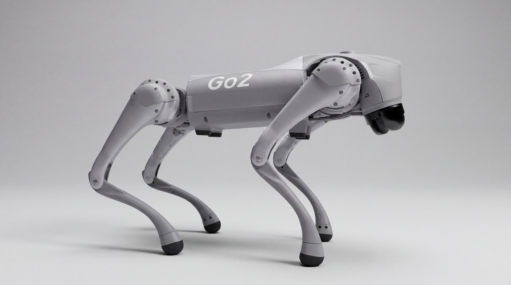
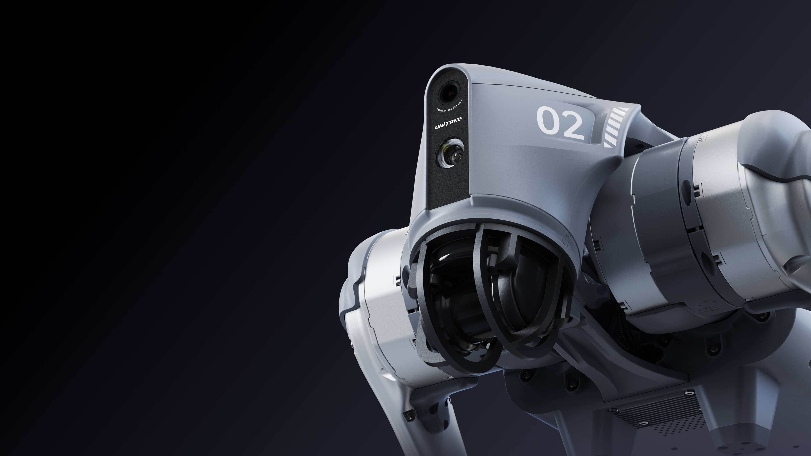
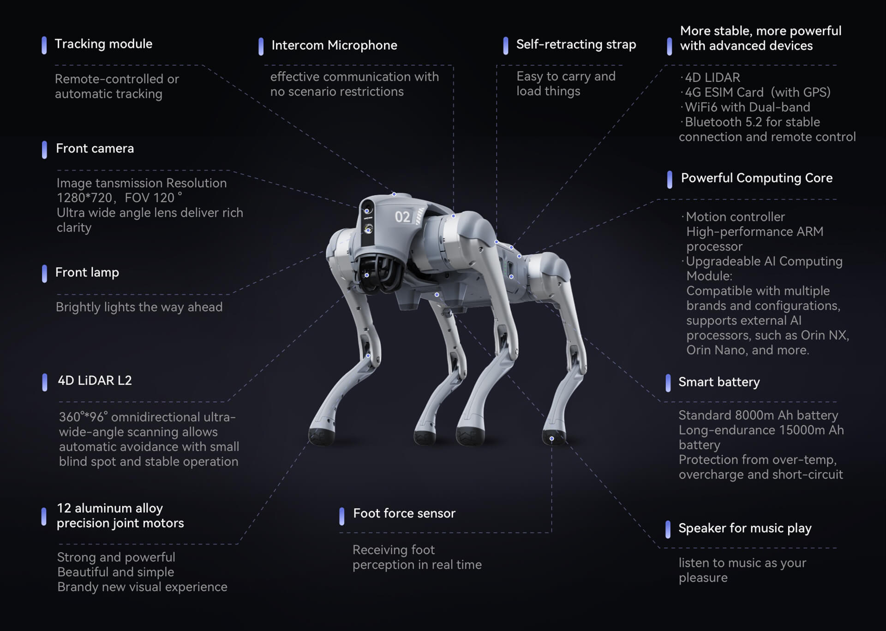
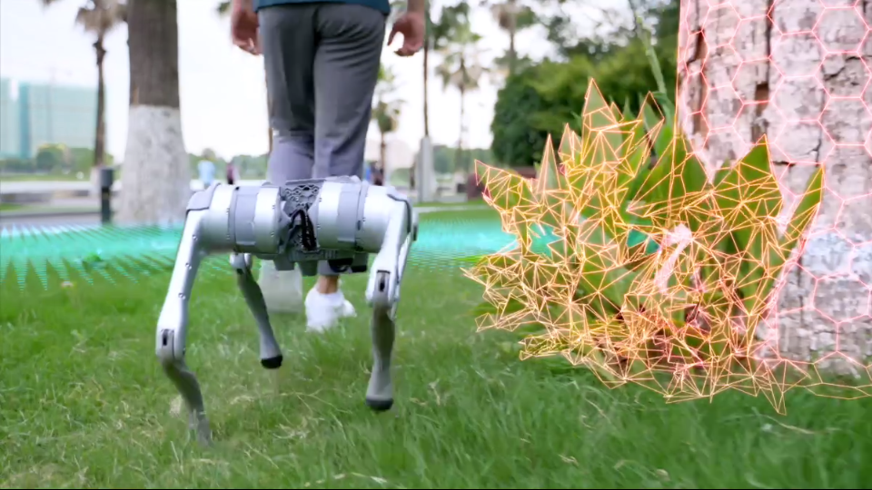
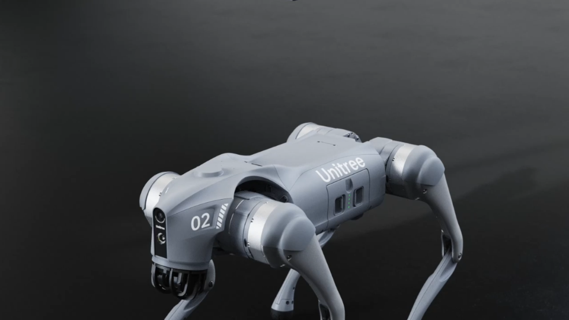
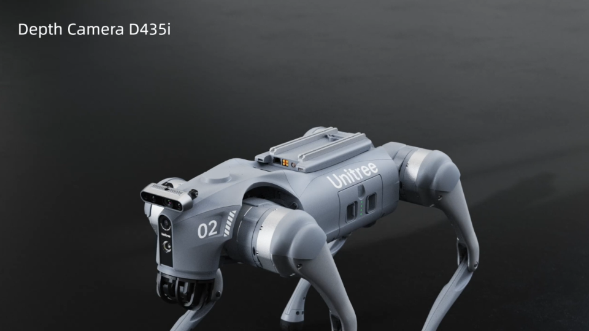
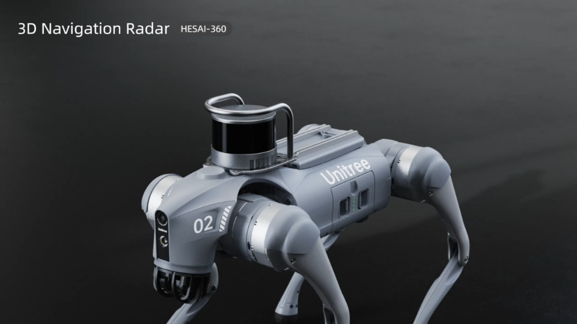

같은 Go2가 모든 컷을 걷도록
Unitree 공식 이미지와 영상으로 고정하는 외형 기준
UNITREE GO2 / OFFICIAL VISUAL REFERENCES



컷마다 유지할 외형
- 머리: 전면 세로 패널과 그 아래 검은 LiDAR 하우징.
- 몸통: 낮고 긴 회색 몸체, 둥근 상부 관절과 일정한 비율.
- 다리: 굽은 가느다란 링크와 작은 검은 발고무. 두꺼운 부츠로 바꾸지 않음.
- 후면: 실제 보행 프레임의 중앙 구조와 양쪽 관절을 참조.
- 재질: 회색 표면의 미세한 거칠기. 젖은 곳만 국소 반사.
참조 범위
정면은 공식 제품 렌더, 측면과 후면은 공식 영상에서 직접 캡처했습니다. 정투상 도면이 아니므로 원근이나 보행 자세 차이를 치수 차이로 해석하지 않습니다.
영상 속 잔디·인물·센서 그래픽은 외형 참조에서 제외합니다. 현재 공식 페이지의 자료가 팀 보유 개체와 모든 세부 사양까지 같다는 뜻은 아닙니다.
기존 생성 컷은 연출 시안입니다. 이 시트에 맞춘 외형 보정은 다음 이미지 비교 단계에서 진행합니다.
배경 정리 후보 · 원본과 비교
공식 측면 보행 프레임을 참조해 Higgsfield에 배경 정리를 요청한 결과입니다. 생성 이미지이므로 공식 원본과 구분합니다. 최종 캐릭터 시트 승인은 아직 하지 않았습니다.

첫 다면 생성 시트는 별도 머리·센서 중복·다리와 후면 변형 때문에 제외했습니다. 여러 방향을 한꺼번에 발명하는 대신 공식 각도별 원본의 외형을 보존하는 방식으로 수정합니다.
머리와 전체 구성


제품 도해의 기능 표기는 모델·구성별 차이가 있을 수 있습니다. 이 시트에서는 외형과 위치를 참조하며, 영상에 표시된 기능을 현재 연구의 구현 성과로 설명하지 않습니다.
후면 보조와 기본 몸체


추가 보유 모듈은 별도로 관리
사용자 확인: Orin NX 16GB · D435i · HESAI-360 보유. 현재 장착 위치와 동시 장착 모습은 미확인입니다. 아래는 공식 옵션 소개 화면이며, 팀 장비의 실물 장착 사진이 아닙니다.

